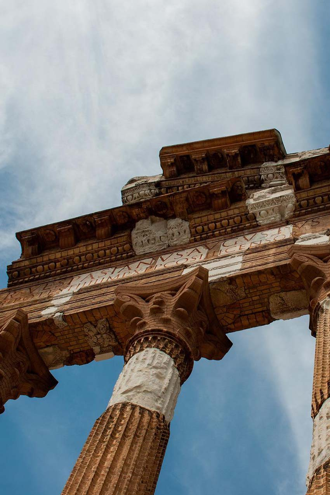

Il progetto
L'Atlantide di Brescia è un sito che raccoglie le principali curiosita culturali sulla Leonessa d'Italia, dai versi che Dante gli dedicò
alle opere d'arte sparse per le vie della città.
Il sito nasce come progetto per un'esame universitario ma soprattutto per permettere a tutti di intraprendere un viaggio nella cultura e riportare
alla luce le storie sommerse dal tempo.

Obbiettivo
Racchiudere in poche pagine di un sito web l'intera storia dela città di Brescia è ovviamente impossibile. Ma quello che mi desidero portare a termine con questa guida
è riportare alla luce il passato , restituirgli una dignità, un'anima permettendo a tutti di consocerlo. Troppe volte soffochiamo la cultura, ci dimentichiamo delle storie che ci circondano ma,
ancor più grave, perdiamo la curiosita di conoscerle. Tramite questa pagine ho volluto lasciare a tutti la possibilità di riscoprire la cultura e ritrovare la curiosita per continuare ad espolorare la città.